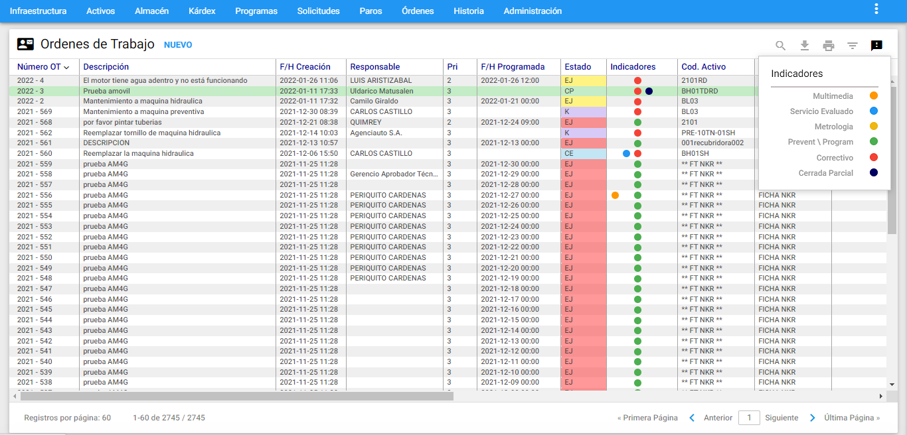

Imagen 67. Órdenes - Acceso directo
Imagen 67. Órdenes - Acceso directo
Se accede desde el comando Órdenes en la barra de menú principal de AM. A través de esta ventana se permite crear Órdenes de Trabajo manuales y Administrar la totalidad de las Órdenes activas, Pendientes de Ejecución, o listas para ser enviadas a Historia. Igualmente, desde esta ventana se Administran las Órdenes de Trabajo Programadas (las que se generan desde Programas de Mantenimiento), a continuación se ilustra la Ventana Visor:
 Imagen 68. Órdenes - Ventana Visor
Imagen 68. Órdenes - Ventana Visor
Desde esta ventana es posible observar la lista de las Órdenes de Trabajo existentes o un subconjunto de ellas (efectuado a través de un subgrupo ). Al hacer clic en cualquiera de los registros se visualiza la información completa de la Órden en una nueva ventana llamada Ventana Detalle.
En la Ventana Visor, los nombres que encabezan las columnas a manera de títulos en azul, permiten ordenar de manera ascendente/descendente la información por cada ítem seleccionado, esto a tráves de un clic en el respectivo encabezado.
En esta ventana, en la columna Estado se define una semaforización de las Órdenes de Trabajo. La finalidad de esta columna es mostrar de manera gráfica el estado de cada registro.
La definición de colores está definida, según la siguiente convención de acuerdo al siguiente ícono ubicado en la parte superior derecha de la ventana Visor:
 Imagen 69. Órdenes - Semaforización
Imagen 69. Órdenes - Semaforización
Rojo: Órden con fecha de generación anterior a más de 7 días antes de la fecha actual.
Amarillo: Órden con fecha de generación anterior en un rango comprendido entre 7 días antes de la fecha actual y un día anterior a la fecha actual.
Verde: Órden con fecha de generación entre la fecha actual y 7 días después.
Naranja: Órden con fecha de generación comprendidas después de 7 días de la fecha actual.
Morado: Órden que ha sido Cancelada.
Azul: Órden que ha sido Cerrada.
Ventana Detalle
 Imagen 70. Órdenes - Ventana Detalle
Imagen 70. Órdenes - Ventana Detalle
En la gráfica anterior, Ventana Detalle de Órdenes de Trabajo, se aprecian sus componentes y sus respectivos contenidos. En esta ventana Detalle se encuentra la información relevante a la OT seleccionada en el Visor. A través de ella se Administran los datos genéricos de la Órden de Trabajo. También, se accede a esta ventana cuando se está creando una Órden Manual accionando una vez el botón NUEVO en la Ventana Visor ubicado en la parte superior izquierda.
A continuación se describen los campos que componen esta ventana Detalle de Órdenes de Trabajo; tanto para consulta como para el ingreso manual de una Órden:
OT: Aparece el número o consecutivo asignado por sistema al registro. En la creación de una OT Manual, este campo solamente muestra el Año. Así, una vez se crea o se accione el botón INSERTAR AM asigna un consecutivo a dicha Orden.
F/H Creación: Es la fecha en la cual se crea la Órden de Trabajo. En el caso de Órdenes Programadas, esta fecha es asignada automáticamente por el sistema y no es modificable, según el Programa de Mantenimiento que la genera. Para las Órdenes de Trabajo Manuales, AM sugiere la fecha actual del sistema.
Descripción: Es un texto corto por medio del cual se indica la naturaleza de la labor a realizar. Debe ser conciso y no dar lugar a ambigüedades, este campo tiene una longitud de 100 caracteres. Se recomienda definir la descripción bajo la siguiente norma: iniciar con un verbo en infinitivo como revisar, corregir, inspeccionar, conectar, etc., continuar con el Objeto de mantenimiento o Activo/Equipo y finalizar con un complemento explicatorio. Ejemplo: Revisar la transmisión delantera del sistema. Cambiar a los rodillos la cobertura de caucho.
Prioridad: Es un número de 1 a 7 que indica la prioridad de realización de la OT.
Para AM, la prioridad 1 significa un trabajo de gran urgencia, 2 significa una prioridad Alta, 3 una prioridad normal, mientras que del 4 al 7 es una labor de baja prioridad.
F/H Programada: En este campo se ingresa la fecha programada para realizar la ejecución de la OT.
Referencia: En este campo se puede ingresar el número de un documento, que sirve como referencia o relación a la OT, ejemplo: número de una factura, número de una órden de compra asociada, o un documento interno de despacho de almacén, etc.
Estado: Este campo está bloqueado y muestra el nombre del Estado de la OT.
Código del Activo: Aquí se establece el objeto de mantenimiento digitando directamente el Código y presionando la tecla tabular, o seleccionándolo con el subgrupo . Con cualquiera de las dos opciones anteriores una vez se valide el Activo/Equipo, su descripción se muestra al lado derecho del código.
Descripción: En este campo se visualiza la información de la descripción del Activo seleccionado.
Activo Fijo: En este campo se visualiza la información del Número de Activo Fijo del Activo/Equipo que se ha ya establecido en la ficha técnica de este mismo.
Referencia Externa (Proveedor): En este campo se visualiza la información de la Referencia del Activo/Equipo que se haya establecido en su respectiva ficha técnica.
Serial: En este campo se visualiza la información del Serial del Activo/Equipo que se haya establecido en su respectiva ficha técnica.
Alias: En este campo se visualiza la información del Alias del Activo/Equipo que se haya establecido en su respectiva ficha técnica.
Solicitante: En este campo se define el nombre del Solicitante de la labor. Cuando la OT es generada desde una Solicitud de Servicio, este campo trae el nombre del solicitante ingresado automáticamente.
Incluido en TE (RI) : Al seleccionar esta opción, en el campo “Solicitante” solo se despliegan los Terceros o Responsables Internos existentes en la tabla de Terceros en Infraestructura.
Correo Electrónico: En este campo se define el correo electrónico del Solicitante de la labor, cuando el solicitante es digitado manualmente. Si el solicitante se selecciona con la opción Incluido en TE (RI) y allí se tiene definido el correo electrónico, automáticamente se carga a este campo el e-mail definido en el módulo de Terceros.
Centro de Costo: Es el Centro de Costo (CC) asociado a la OT, predefinidos en su tabla respectiva de Infraestructura y que es “Responsable” del pago de los consumos de Gasto Real que dicha OT genere. Inicialmente, se sugiere el CC que tiene asociado el Activo/Equipo que es objeto de Mantenimiento. Sin embargo, el CC es posible cambiarlo.
Sub CC: Este campo siempre está bloqueado y muestra el Código Sub CC asociado al CC elegido.
Ubi. Física: Es el lugar físico en el que se realiza la labor. Inicialmente se sugiere la Ubicación Física asociada al Activo/Equipo u Objeto de Mantenimiento, pero puede cambiarse a cualquier otro valor predefinido en la tabla de Ubicaciones Físicas.
Centro Responsable: Especifica el Centro Responsable (CR) o grupo de mantenimiento, encargado de realizar la labor.
Responsable ejecutor: En este campo se elige a la persona, natural o jurídica responsable por la labor a ejecutar.
Filtrar por CR : Al seleccionar esta opción, en el campo “Responsable Ejecutor” solo se despliegan los Responsables correspondientes al Centro Responsable elegido en el campo “Centro Responsable”. En otro caso, en el campo “Responsable Ejecutor” se despliegan todos los “Responsables” existentes su tabla respectiva en Infraestructura.
Contrato: En este campo se selecciona el contrato que pertenece al Contratista responsable de ejecutar la OT. Estos se definen en su tabla respectiva en el módulo de la Infraestructura.
Responsable por la institución: En este campo se elige a la persona de la institución, que acompañará y/o recibirá la labor prestada por el Responsable ejecutor, cuando este sea un Contratista o Servicio Externo.
T. Trabajo: Indica los Tipos de Trabajo que se realizan en la OT. Es posible definir más de un Tipo de Trabajo.
T. Mtto: Este campo indica el Tipo de Mantenimiento a realizar en la OT. Cada registro debe poseer uno. Si en la OT se va a registrar un trabajo que no corresponde a una labor de mantenimiento, en este campo se sugiere elegir de las opciones mostradas el tipo “Otro” y en el campo “T.Actividad” se especifica detalladamente, el tipo de labor.
T. Actividad: Aquí se establece el Tipo de Actividad a realizar en la OT. Este campo trabaja en coordinación con el anterior (Tipo de Mantenimiento). Si en el campo anterior se ha hecho la selección de “Otro”, en el tipo de Actividad se debe seleccionar el valor “MN: Mantto”, lo que indica que se trata de una actividad que constituye mantenimiento. Si en el campo anterior se ha seleccionado el valor “Otro”, en el campo Tipo de Actividad se debe seleccionar un valor que defina consistentemente la labor a ejecutar.
F/H de Paro: Para las OT Correctivas, en este campo se registra la Fecha y hora del daño, falla o avería. La fecha se maneja en formato DD/MM/AAAA; la hora se maneja en formato 12 horas. Cabe anotar, que la fecha y hora consignadas corresponden al momento en que se informó del daño o falla a Mantenimiento, así que es posible que el daño haya ocurrido en una fecha/hora anterior. Sin embargo, se debe procurar, administrativamente, que Mantenimiento se entere lo más pronto posible de la Fecha y Hora reales del paro.
Tiempo Estimado: Es un campo netamente informativo, e indica de manera aproximada de cuánto tiempo demora la labor. Se establece el número y a continuación el período de tiempo que representa (Días, Horas o Minutos).
Tiempo Improductivo : En este campo lo indica la persona o personas encargadas de realizar la labor, si debe pararse el Activo/Equipo para proceder a la realización de la misma. Cuando se dice que el Activo genera Tiempo Improductivo significa que habiendo estado programado para trabajar u operar, debe ser intervenido por mantenimiento. Este campo se tiene en cuenta al momento del cierre una OT: si el indicativo de Tiempo Improductivo está habilitado, AM calcula y carga el Tiempo Improductivo. En caso contrario no lo hace.
>Nota: El tiempo improductivo es calculado dependiendo del tipo de mantenimiento (TM), es decir, si la OT es correctiva, éste es calculado desde la F/H Paro hasta la F/H Fin trabajos. Si es preventivo u otro TM entonces se calcula desde la F/H Atención hasta la F/H Fin trabajos. Este tiempo se puede corregir en el respectivo campo con el fin de reflejar la realidad.
Criterio: Es un campo informativo que despliega el criterio utilizado por AM para haber generado la OT. (Solamente para Órdenes de Trabajo Programadas).
Tarea: Este campo informativo muestra el ordinal de la tarea, es decir, cuál fue el PM o la actividad que generó la OT actual. Es válido solamente en el caso de Órdenes Programadas.
Control Presupuestal : Esta opción permite definir si la OT que se genera apartir de una SS o que está siendo creada manualmente va a manejar Presupuesto. Para las OTs automáticas, esta opción siempre está seleccionada, pero aparece protegida, ya que toda OT Programada conlleva el Presupuesto Aprobado.
Para las OTs Manuales, esta opción se establece en el momento de creación de la misma. Ésta se debe marcar antes de accionar el botón INSERTAR de otra forma, AM asume que la OT no va a requerir Control Presupuestal y la posibilidad de hacer la marcación se inactiva en el acto.
Cuando una Órden de Trabajo Manual exige control presupuestal y el presupuesto no ha sido aprobado, no es posible registrar ni modificar el Gasto Real en ella.
Acciones Técnicas : Esta opción habilita una tabla de Acciones Técnicas en una nueva pestaña de la OT. Esta tabla está ligada a la Infraestructura, creada con su mismo nombre, que contiene un listado de Acciones Técnicas frecuentes definidas por el área de Mantenimiento. Se pretende describir, brevemente, la actividad general realizada en una OT representada como un check list. (En la sección vistas parciales/Acciones Técnicas se explica mas el detalle).
Estado del Activo: Es posible que los usuarios solicitantes o la misma área de mantenimiento pueda definir por medio de este switche si el Activo se le entrega limpio al departamento de mantenimiento.
Comentarios: Esta opción se usa para ingresar los nuevos comentarios referentes a toda la ejecución de la OT. Al accionar Agregar Comentario aparecerá el comentario ingresado al lado derecho en una ventana tipo chat bloqueada; además de la fecha, hora y el usuario logueado que realiza el comentario.
Este espacio de comentarios sirve para dos efectos:
-
Cuando se genera la OT, como comentarios a priori, para especificar referencias importantes o ayudas previstas y necesarias en la ejecución posterior de la OT como planos, manuales técnicos, manuales de normas técnicas de mantenimiento o de especificaciones detalladas; normas de seguridad o enfoques de acción. Sin embargo, en la gran mayoría de los casos se utiliza la pestaña Multimedia para registrar estos datos. (Ver Sección Vistas Parciales/Multimedia para mas detalle).
-
Cuando ha concluido la ejecución de la OT, es posible utilizarlo para registrar hechos interesantes acerca de la misma ejecución, como el estado del equipo antes de la intervención, detalles de la intervención, estado del mismo equipo después de ella, recomendaciones a los usuarios del equipo, recomendaciones a las personas de mantenimiento y otros conceptos interesantes a juicio de los ejecutantes.
Ventana submenú de Órdenes de trabajo
Indicadores
Es posible saber cuáles OT son de tipo Metrología, Preventiva/Programada, Correctiva y Cerrada Parcial, si tienen Multimedia y Servicio Evaluado directamente desde la ventana visor, sobreponiendo el cursor en el ícono de Indicadores ubicado en la parte superior derecha de la ventana mostrando un conjunto de pelotas de colores que indican el tipo de información definida y asociada, como se muestra a continuación:
 Imagen 71. Órdenes - Ventana Detalle
El significado de los colores es el siguiente:
- Naranja: Órden que tiene asociado archivos de imágenes, videos y/o documentos en la pestaña Multimedia.
- Blanco: Indica que la OT retroalimentada a través de AMovil contiene la firma de Recibido por parte del usuario solicitante.
- Azul: Órden con servicio evaluado.
- Mostaza: Órden de TM Metrología.
- Verde: Órden de TM Preventivo o Programada.
- Rojo: Órden de TM Correctivo.
- Azul Oscuro: OT en estado Cerrada Parcial.
- Fucsia: Indica que son OT que utilizan la interfase para hacer pedidos de materiales/repuestos al almacén del ERP.
- Amarillo: Son OT que han sido creadas por medio de un API.
Subgrupos
Se usa para seleccionar un grupo de OTs que cumplen con un conjunto de criterios o filtros definibles aquí, con el objeto de realizar estudio posterior sobre él. Para ingresar a esta opción se debe dar clic al icono de filtro ubicado en la parte superior derecha de la ventana Visor de OT.
Cada criterio trabaja en conjunto con los demás, con el operador intersección.
Cada criterio aparece inicializado en un valor global que permite mostrar todas las Órdenes de Trabajo. Lo que significa que de no escoger un criterio, se obtiene como resultado del subgrupo el mismo conjunto de todas las Órdenes de Trabajo.
AM mantiene activo cualquier subgrupo en cada módulo, hasta que el usuario lo modifique o restablezca los valores estándar. Cuando el ícono se muestra con una pelota roja, está indicando que lo que se visualiza en el visor es un subgrupo.
El programa permite entonces hacer selección de un grupo de OTs de acuerdo con los criterios seleccionados en la siguiente ventana:
 Imagen 72. Órdenes - Ventana Subgrupo
Imagen 72. Órdenes - Ventana Subgrupo
Los campos de datos que constituyen criterio de selección, se agrupan en dos bloques:
1. FILTRAR POR CAMPOS DEL ACTIVO ASOCIADO A LA ÓRDEN DE TRABAJO
AC - Alias: Este campo filtra las OTs activas para el o los Activos cuyo Alias corresponda a los valores aquí definidos. En este campo se pueden utilizar los comodines (%).
AC – Cód. de Barras Int.: Permite seleccionar las OTs que se encuentran asociadas al Activo que se encuentre con el Código de Barras Interno que el usuario ingresa en este campo y que posea una Órden.
AC – Cód. de Barras Prov.: Permite seleccionar las OTs asociadas a un Activo que se encuentre ligado al Código de Barras del Proveedor que se ingresó al crear el Activo.
AC - Activo Fijo: Este campo preselecciona las OTs activas para el o los Equipos cuyo Número de Activo corresponde a los valores aquí definidos. En este campo se pueden utilizar los comodines.
AC - Código: Esta selección agrupa las OTs cuyos Activo coincidan con el relacionado en este criterio. Es posible definir el código completo o una porción del mismo. Por ejemplo: si se escribe 341%, se seleccionan todas las OT cuyo código de Activo inicia por 341. Si se escribe %1 se seleccionan todos los Solicitudes de Servicio cuyo código de Activo finaliza en un “1”. El porcentaje (%) es un carácter comodín que significa “todos”. También, es posible seleccionar el Activo a través del visor del módulo de Activo. Para ello se da un clic sobre el icono de filtro que se encuentra al lado del campo. Acto seguido se muestra la ventana de visor de Activos independiente. Ene Allí, una vez se encuentra el Activo, se selecciona dando un clic sobre cualquiera de sus campos. A continuación, se da un clic sobre botón Aceptar o se hace doble clic sobre el registro seleccionado. Inmediatamente este código aparece automáticamente en el campo.
AC-Descripción: Selecciona las OTs asociadas a los Activos según criterios que se fundamenten en su descripción. Ejemplo: %Motor% selecciona todos los Activos, en cuya descripción, en cualquier posición, tengan la palabra “Motor”.
AC-Estado: Filtra las OTs de acuerdo con el “Estado” de un Activo/Equipo u objeto de mantenimiento que se encuentre en estado “activo”.
AC-Número Activo Fijo: Este campo filtra las OTs para el o los Activos cuyo Número de Activo corresponde a los valores aquí definidos. En este campo se pueden utilizar los comodines (%).
AC-Referencia: Este filtro permite filtrar las OTs para el o los Activos cuya Referencia corresponda a los valores aquí definidos. En este campo se pueden utilizar los comodines (%).
AC-Serial: Esta alternativa permite filtrar las OTs de acuerdo con el número serial del Activo objeto de mantenimiento. El campo acepta comodines (%).
AC-Ubicación Física: Permite la selección de las OTs cuyo Activo se encuentre en una Ubicación Física determinada. Existen dos formas de definir la Ubicación Física del Activo. La primera es seleccionando una de la lista desplegable. La segunda es dando clic al icono de candado , el cual se desactiva y permite digitar segmentos del nombre de la Ubicación Física utilizando comodines (%) lo cual, también hace posible seleccionar OT cuyo Activo esté en una Ubicación Física que tenga parte del nombre igual. Por ejemplo: Cava% selecciona las OT con Activos cuya Ubicación Física empieza por la palabra Cava, independientemente de si se está hablando de la Cava de Fermentación, Maduración o Contrapresión.
AC-Tipo: Selecciona las OTs asociados a los Activos que se encuentran asociados al tipo ingresado por el usuario.
AC - Marca: Selecciona el conjunto de OTs que se asocian a la marca del Activo ingresado en el campo. Este campo acepta comodines (%).
AC - Modelo: Filtra el conjunto de OTs que se asocian al modelo del Activo ingresado en el campo. Este campo acepta comodines (%).
2. FILTRAR POR CAMPOS DE LA ORDEN DE TRABAJO
Acción Técnica: Filtra las OTs a las cuales se le definió la Acción Técnica seleccionada en esta opción. Existen dos formas de definir la Acción Técnica de la OT. La primera es seleccionando una de la lista desplegable. La segunda, es dando clic al icono de candado el cual se desactiva y permite digitar segmentos del nombre de la Acción Técnica usando comodines (%) que filtran la OT cuya Acción Técnica tenga parte del nombre igual.
Causa de Cierre: Permite buscar las OTs que tienen una Causa de Cierre específica. Existen dos formas de definir la Causa de Cierre de la OT. La primera es seleccionándola desde la lista desplegable. La segunda es dando clic al icono de candado el cual se desactiva permitiendo digitar segmentos del nombre de la Causa de Cierre utilizando comodines (%) que permiten filtrar las OT cuya Causa de Cierre tenga parte del nombre igual.
Causa de Pendiente: Filtra las OTs cuyo Estado es “Pendiente” según el tipo de Causa Pendiente seleccionada. Existen dos formas de definir la Causa de Pendiente de la OT. La primera es seleccionándola de la lista desplegable. La segunda es dando clic al icono de candado el cual se desactiva permitiendo digitar segmentos del nombre de la Causa de Pendiente utilizando comodines (%) que filtran las OT cuya Causa de Pendiente tenga parte del nombre igual.
Causa de Falla: Permite buscar las OTs que tienen una Causa de Falla específica. Existen dos formas de definir la Causa de Falla de la OT. La primera es seleccionándola de la lista desplegable. La segunda es dando clic al icono de candado el cual se desactiva permitiendo digitar segmentos del nombre de la Causa de Falla utilizando comodines (%) que buscan las OT cuya Causa de Falla tenga parte del nombre igual.
Centro de Costo: Filtrar OTs de acuerdo con el Centro de Costo asignado a ella. Existen dos formas de definir el Centro de Costo. La primera es seleccionándolo de la lista desplegable. La segunda es dando clic al icono de candado el cual se desactiva permitiendo digitar segmentos del nombre del Centro de Costo a través del uso de comodines (%). Cuando se utilizan comodines, es posible seleccionar las OT a Centros de Costo que tengan parte del nombre igual. Por ejemplo: Sistema% selecciona todas las OT en cuyo Centro de Costo exista la palabra Sistema, independiente de si se está hablando del Sistema de Agua, de Vapor o de Energía.
Centro Responsable: Agrupa las OTs cuyo Centro Responsable sea el seleccionado. Existen dos formas de definir el Centro Responsable. La primera es seleccionándolo de la lista desplegable. La segunda es dando clic al icono de candado el cual se desactiva y permite digitar segmentos del nombre del Centro Responsable utilizando comodines(%).
Contrato: Filtra las OTs que se encuentren asociadas a un contrato ya definido en la tabla de “CONTRATO” en el módulo de Infraestructura. Existen dos formas de definir el Contrato de la OT. La primera es seleccionándolo de la lista desplegable. La segunda es dando clic al icono de candado el cual se desactiva y permite digitar segmentos del nombre del Contrato utilizando comodines (%). Cuando se utilizan comodines, es posible filtrar las OT cuyo Contrato tenga parte del nombre igual.
Criterio de Generación: Permite filtrar el subconjunto de OTs generadas desde PM, bajo el Criterio de Programación “XX” seleccionado. Los criterios son:
| Abreviatura | Significado |
|---|---|
| MM | Mensual |
| SS | Semanal |
| SM | Semestral |
| AN | Anual |
| DD | Días (Mín. 3) |
| SA | Semanas del año |
| +M | Meses (mas de uno) |
| +S | Semanas (mas de una) |
| KI | Contador por Incremento |
| KL | Contador por Límite |
| FK | Frecuencia y Contador |
| TM | Trimestral |
| +K | Contador (mas de uno) |
| ?? | Sin Criterio |
Descripción: Esta opción permite seleccionar las OTs que cumplan con el criterio de selección establecido en este campo, es posible utilizar la funcionalidad de comodines (%).
Efecto de Falla: Este campo permite seleccionar las OTs que posean una causa de falla específica. Existen dos formas de definir el Efecto de Falla de la OT. La primera es seleccionándola de la lista desplegable. La segunda es dando clic al icono de candado el cual se desactiva permitiendo digitar segmentos del nombre del Efecto de Falla utilizando comodines (%). Cuando se utilizan comodines, es posible seleccionar OT cuyo Efecto de Falla tenga parte del nombre igual.
Estado Particular: Permite seleccionar las OTs de acuerdo a su Estado Particular. Al descolgar aparece el listado de todos los Estados posibles para una OT.
Estado General: Permite seleccionar las OTs de acuerdo a un Estado general: Abierta, Cancelada y Cerrada.
FF de Cierre: Este criterio filtra las OTs por un rango de la Fecha de Cierre de Trabajos. Aparecen dos campos: Desde y Hasta. En cada uno de ellos se digita una fecha. De no digitar el campo “Desde”, se buscan las Órdenes de Trabajo cuya fecha de cierre esté en el lapso anterior a la fecha digitada en “Hasta”. De no digitar el campo “Hasta”, se buscan los registros cuya fecha de cierre esté en un lapso posterior a la digitada en “Desde”.
Comentarios: Filtra los registros que contengan una parte del comentario registrado en este campo.
FF de consumo Mano de Obra: Filtra las OTs por un rango de la Fecha de consumo de mano de obra en el Gasto Real de la OT. Aparecen dos campos: Desde y Hasta. En cada uno de ellos se digita una fecha. De no digitar el campo “Desde”, se buscan los registros cuya fecha de consumo de mano de obra esté en el lapso anterior a la fecha digitada en “Hasta”. Al no digitar el campo “Hasta”, se buscan las ots cuya fecha de consumo de mano de obra esté en un lapso posterior a la digitada en “Desde”.
FF de consumo en Gasto Real: Este criterio filtra las OTs por un rango de la Fecha de consumo de Gasto Real. Aparecen dos campos: Desde y Hasta. En cada uno de ellos se digita una fecha. De no digitar el campo “Desde”, se buscan los registros cuya fecha de consumo de Gasto Real esté en el lapso anterior a la fecha digitada en “Hasta”. Al no digitar el campo “Hasta”, se buscan las OTs cuya fecha de consumo de mano de obra esté en un lapso posterior a la digitada en “Desde”.
FF de Inicio de Trabajos: Este criterio filtra las OTs por un rango de la Fecha de Inicio de Trabajos. Aparecen dos campos: Desde y Hasta. En cada uno de ellos se digita una fecha. De no digitar el campo “Desde”, se buscan los registros cuya fecha de Inicio de trabajos esté en el lapso anterior a la fecha digitada en “Hasta”. De no digitar el campo “Hasta”, se buscan las OT cuya fecha de fin de trabajos esté en un lapso posterior a la digitada en “Desde”.
FF de Fin de Trabajos: Este criterio filtra las OTs por un rango de la Fecha de Fin de Trabajos. Aparecen dos campos: Desde y Hasta. En cada uno de ellos se digita una fecha. De no digitar el campo “Desde”, se buscan los registros cuya fecha de fin de trabajos esté en el lapso anterior a la fecha digitada en “Hasta”. De no digitar el campo “Hasta”, se buscan las OT cuya fecha de fin de trabajos esté en un lapso posterior a la digitada en “Desde”.
FF de Creación: Permite filtrar las OTs cuya fecha de Creación se encuentren incluidas en el rango especificado en este campo. Aparecen dos campos: Desde y Hasta. En cada uno de ellos se digita una fecha. De no digitar el campo “Desde”, se buscan los registros cuya fecha de creación esté en el lapso anterior a la fecha digitada en “Hasta”. De no digitar el campo “Hasta”, se buscan las OT cuya fecha de fin de trabajos esté en un lapso posterior a la digitada en “Desde”.
FF Programada: Este criterio filtra las OTs por un rango de la Fecha Programada. Aparecen dos campos: Desde y Hasta. En cada uno de ellos se digita una fecha. De no digitar el campo “Desde”, se buscan los registros cuya fecha programada esté en el lapso anterior a la fecha digitada en “Hasta”. De no digitar el campo “Hasta”, se buscan las OT cuya fecha programada esté en un lapso posterior a la digitada en “Desde”.
Gasto Real Mano de Obra: Esta opción habilita una lista desplegable donde se escoge el criterio deseado, junto con un campo donde se digita el valor de comparación. Los criterios son:
- Igual (=)
- Mayor (>)
- Menor (<)
Estos criterios actúan en comparación con el valor digitado en el campo que se activa al lado del operador aritmético. Ejemplo: Si se escoge el criterio Mayor (>) y la cantidad es 100.000, eso significa que filtrara todas las OT cuyo Gasto Real en la Mano de Obra sea Mayor a Cien Mil Pesos o unidades monetarias.
Gasto Real Materiales y Repuestos: Esta opción habilita una lista despegable donde se escoge el criterio deseado, junto con un campo donde se digita el valor de comparación. Los criterios son:
- Igual (=)
- Mayor (>)
- Menor (<)
Estos criterios actúan en comparación con el valor digitado en el campo que se activa al lado del operador aritmético.
Gasto Real otros Conceptos: Esta opción se habilita una lista despegable donde se escoge el criterio deseado, junto con un cuadro donde se digita el valor de comparación.
Los criterios son:
- Igual (=)
- Mayor (>)
- Menor (<).
Estos criterios actúan en comparación con el valor digitado en la casilla que se activa al lado del operador aritmético.
Indicadores: Este es un campo desplegable que filtra las OT que tenga el indicador por color definido, las opciones son: Ninguno, Multimedia, Firma Recibido, Servicio Evaluado y Creadas desde APi.
Número de la OT: Filtra los registros con base en su número consecutivo. Para ello se define en el criterio un rango. Aparecen cuatro campos, para ubicar el comienzo del rango “Desde” (Año-Consecutivo) y el fin del rango “Hasta” (Año-Consecutivo). De no digitar los campos “Desde”, se buscan las OT cuyo número es inferior al digitado en “Hasta”. De no digitar los campos “Hasta”, se buscan las OT cuyo número es posterior al digitado en “Desde”.
Número de la Solicitud: Permite buscar la OT por medio del consecutivo de la Solicitud de Servicio que fue asociada a la OT.
Presupuesto: Permite filtrar las Órdenes de Trabajo de acuerdo al manejo que hagan sobre su Presupuesto: No maneja, No aprobado, Aprobado.
Prioridad: Filtra las OT de acuerdo a su Prioridad, habilitándose una lista despegable desde el nivel 1 hasta el nivel 7.
Responsable por la Institución: Agrupa las OTs de acuerdo al Responsable por Institución o la persona que recibe a satisfación. Existen dos formas de buscar el Responsable. La primera es seleccionándolo de la lista desplegable. La segunda es dando clic al icono de candado el cual se desactiva permitiendo digitar segmentos del nombre del Responsable, en el cual también es posible usar comodines (%). Cuando se utilizan comodines, es posible seleccionar las OT cuyo Responsable tenga una parte del nombre igual.
Referencia: Este opción agrupa las OTs que tienen asociado el valor seleccionado, en el campo Referencia. Es posible usar comodines (%).
Responsable: Filtra las OTs de acuerdo al Responsable asignado.Existen dos formas de buscar el Responsable. La primera es seleccionándolo de la lista desplegable. La segunda es dando clic al icono de candado el cual se desactiva permitiendo digitar segmentos del nombre del Responsable, en el cual también es posible usar comodines (%). Cuando se usan comodines, es posible seleccionar las OT cuyo Responsable tenga una parte del nombre igual.
- Responsable Asignado para Histograma: Permite seleccionar las OT cuyo Responsable está asignado para el histograma. Este campo depende de la elección que se definia en el criterio Responsable.
Responsable en Gasto Real: Permite filtrar de las OT cuyo Responsable en Gasto Real está definido en la mano de obra del Gasto Real.
RP-Código: Filtra las OTs cuyo Repuesto fue asociado en el Gasto Real. Para hacer la búsqueda del Repuesto, primero se elige el almacén de la lista desplegable en el primer campo, una vez elegido, se activa automáticamente el segundo que permite buscar el Repuesto a través del ícono azul de Materiales y Repuestos o digitarlo manualmente. Cuando se busca a través del ícono, se abre una nueva ventana de Materiales y Repuestos (allí también es posible seguir haciendo subgrupos). Para la selección del Repuesto se hace un doble clic o se selecciona el registro dando clic en el botón superior ACEPTAR.
Solicitante (Digitado Manualmente): Permite agrupar las OTs cuyo Solicitante fue especificado manualmente y no pertenece a la lista de Terceros, está búsqueda es posible hacerla a través de los comodines (%).
Solicitante (Incluido en terceros - Tipo RI): Permite agrupar las OTs cuyo Solicitante fue seleccionado de la tabla de terceros (como RI) y coincide con el definido en este criterio. Existen dos formas de definir el Solicitante de la OT. La primera es seleccionándolo de la lista desplegable. La segunda es dando clic al icono de candado el cual se desactiva permitiendo digitar segmentos del nombre del Solicitante usando comodines (%). El sistema hace la búsqueda de las OT cuyo Solicitante tenga parte del nombre igual.
Tipo de Actividad: Este criterio se habilita una vez que se haya elegido un TM. Filtra las Órdenes por TA. Existen dos formas de hacer la búsqueda. La primera es seleccionándola de la lista desplegable. La segunda es dando clic al icono de candado el cual se desactiva permitiendo digitar segmentos del nombre del TA utilizando comodines (%), el sistema hace la búsqueda de las OT cuyo TA tenga parte del nombre igual.
Tipo de Mantenimiento: Filtra las OTs por TM. Al activar ésta opción se activan las siguientes opciones: Correctivo, Preventivo, Preventivo Manual, Predictivo, Metrología, Inspección, Lubricación, Otro-Mantto y Otro.
Tipo de Trabajo: Agrupa las OTs de acuerdo al TT al que están asociadas. Estas opciones aparecen individualizadas, pero es posible seleccionar dos o más.
Origen OT: Filtra las OTs que se hayan generado por Solicitudes de Servicio, Paros y Averías u Órdenes de trabajo.
Ubicación Física: Permite filtrar las OTs cuyo Activo esté en la ubicación física que se determina en este criterio. Existen dos formas de filtrar la Ubicación Física. La primera es seleccionándola de la lista desplegable. La segunda es dando clic al icono de candado el cual se desactiva permitiendo digitar segmentos del nombre de la Ubicación Física utilizando comodines (%), cuando se usan, es posible seleccionar los registros cuyo Activo esté en una Ubicación Física que tenga parte del nombre igual. Por ejemplo: Cava% selecciona las OT con Activos donde la Ubicación Física empiece por esta palabra, independientemente de si se está hablando de la Cava de Fermentación, Maduración o Contrapresión.
Días Vencimiento: Muestra los días vencidos que tiene una OT, a partir de la fecha programada y la fecha actual. Permite filtrar de las OT cuyos días de vencimiento apliquen al criterio definido. Esta opción habilita una lista despegable donde se escoge el criterio deseado, junto con un campo donde se digita el valor de comparación. Los criterios son:
- Igual (=)
- Mayor (>)
- Menor (<)
Estos criterios actúan en comparación con el valor digitado en la casilla que se activa al lado del operador aritmético.
Nota: Es importante tener en cuenta que cuando se están realizando los subgrupos, se pueden utilizar uno o varios de estos criterios simultáneamente. También se permite la unión de selecciones, es decir, después de haber realizado una búsqueda de un criterio, es posible hacer otra y unir el resultado de las dos. Para ello, tras definir los criterios de la segunda selección, se da un clic al botón MAS , en lugar de darlo al botón ACEPTAR .